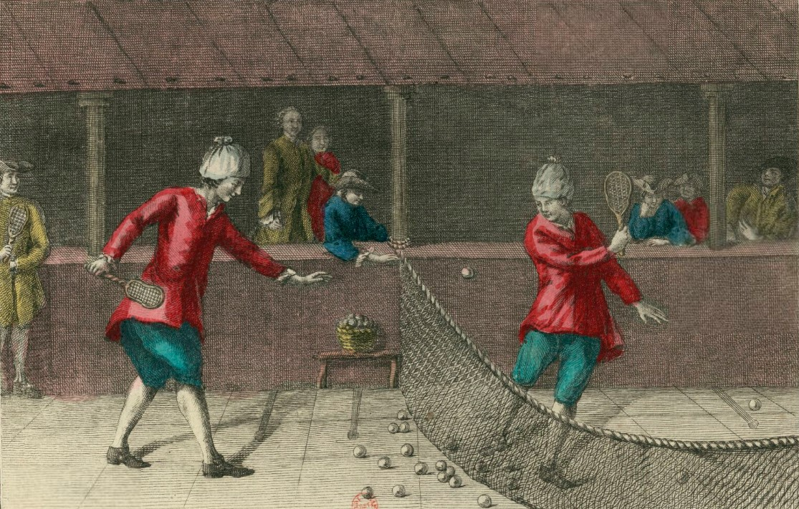
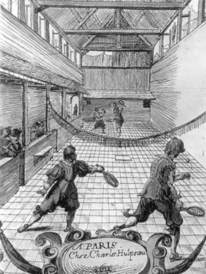

Le tennis descend d’une évolution du Jeu de Paume, connu depuis le Moyen-Âge. Les moines s’amusaient à lancer une balle en cuir à la main, contre les murs des grandes pièces du monastère. Au XVIe siècle, la première raquette fut inventée, avec un cordage en boyau de mouton, ce qui rendait le jeu moins douloureux pour les mains. Deux branches du Jeu de Paume se distinguèrent petit à petit, l’une s’orientant vers le tennis (sans mur) et l’autre vers la pelote basque et le squash moderne. Le Jeu de Paume avec raquette, en intérieur ou extérieur, conquit alors la noblesse française. François Ier ou Henri IV étaient d’ailleurs plus assidus à ce jeu qu’aux affaires politiques ! Puis cette activité s’étendit ailleurs en Europe et sur les autres continents. C’est de son expatriation anglaise que provient le nom actuel du tennis. Le service s’accompagnait du mot « tenez », dérivant en « teneys », avec l’accent british. Les aristocrates anglais préférèrent le nom « tennis » que « Jeu de Paume ».

